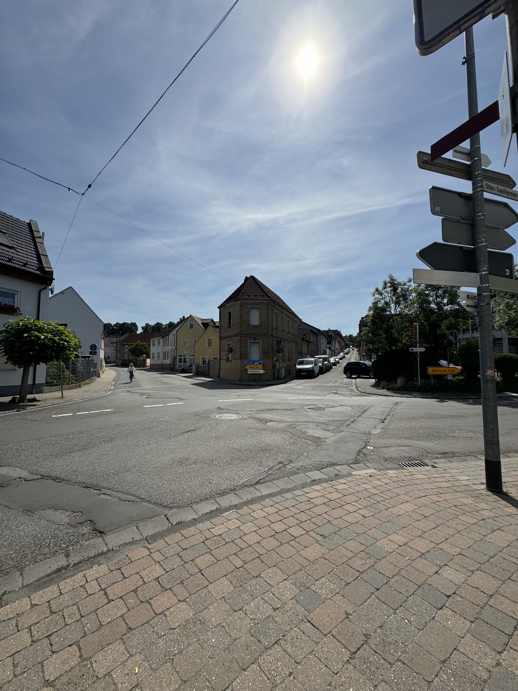
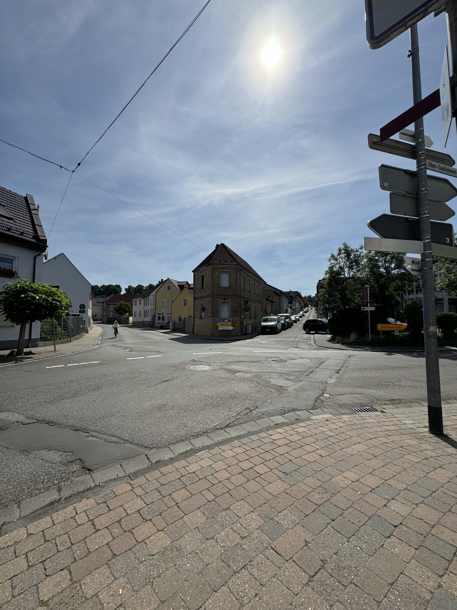
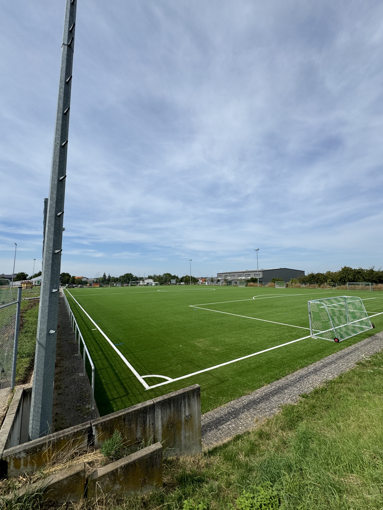
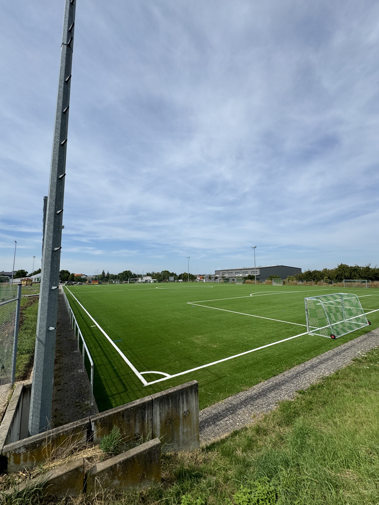

Saulheim
 

The first things I saw when I arrived at the Saulheim train station were graffiti and rolling hills with vineyards. Then, I walked down to the intersection. On my walk down, I saw two businesses: Zorn’s Flowers and Zorn’s Jewelry. I froze when I saw these signs, but sadly, the businesses were closed. It looked like the shops had been closed for a long time. Throughout the city, there was no one on the streets. I wish there was more life in the city, but it was dead.

The town was really pretty, with churches and a giant park. I walked everywhere I could and ran into a few locals. I went to the grocery store, which had .55-cent beers. That’s how rural it was. Prices were unbelievably cheap. It must be nice. However, it makes sense because there weren’t any businesses, and I’m not sure how the residents made a living. I also went to the cemetery, where there were maybe 10-15 graves with Zorn on them. Also, there were WW1 and WW2 memorials with the names of all the people who died in the wars from Saulheim honored. There were many Zorns on both memorials.
Zornheim

I took the train from Saulheim to the next stop North and then walked a mile to Zornheim. On approach, there were a ton of signs which made me feel at home. It was a crazy feeling.

Zornheim is on the top of a hill with 360-degree views of rolling German countryside and vineyards. I could see for miles, and giant windmills were everywhere off into the distance. I couldn’t keep the smile off my face because it was so beautiful. I spent a lot of time in big, touristy cities previously on the trip, so I was so happy to get out into the countryside. Plus, it was the birthplace of my ancestors.

I spent the whole day hiking all around the town. On a trail through some vineyards, I stumbled upon this chapel I will never forget. It was a small wooden structure on the side of a hill surrounded by goats. I assumed it was for weddings, but the door was unlocked, and I walked right in. It was so different from the huge cathedrals in the cities, and I appreciated it a lot more. The other Zornheim churches and statues were in the city center. I couldn’t go inside the main cathedral, but I’m sure my ancestors went there hundreds of years ago to worship. There was a fountain outside and little kids and families were playing in the water on the hot day.
 

I love sports so much, and Zornheim’s athletic facility and soccer field made me proud. There were two soccer fields, a basketball gym, and a beach volleyball court. They were all in perfect condition, although I wish someone was playing on them. That’s where I would have spent a lot of time if I lived there.

There was a vending machine with eggs, sausage, vegetables, and wine. One of my favorite things I saw on the whole trip. I wonder if this is a thing throughout rural Germany. I regret not buying anything from one of the machines.
Overall
Through talking to some locals, I found out most of the people who live in these places today work in the bigger cities Mainz and Wiesbaden and commute about 30 minutes a day. Then, they raise their families in the quiet suburbs. This made a lot of sense, and I could imagine myself doing something like that. It seems like a wonderful life. I wish my dad could have checked out Saulheim and Zornheim with me, but regardless, I am so happy that I went.